Version 0.9.645 · sortie prochaine
Du croquis au copeau, dans une seule fenêtre.
VerdierCAM dessine la pièce, calcule les parcours, simule la matière enlevée et pilote la défonceuse. Pensé dans un atelier de menuiserie, pour le bois d'abord — et éprouvé sur une vraie machine.
À la sortie : 15 jours d'essai complets, sans carte bancaire. Ensuite, le dessin et la simulation restent gratuits ; la licence sert à écrire le G-code et à piloter la machine.
- Linux et Windows
- 18 familles d'opérations
- Pensé et écrit en français
- Licence perpétuelle, sans abonnement
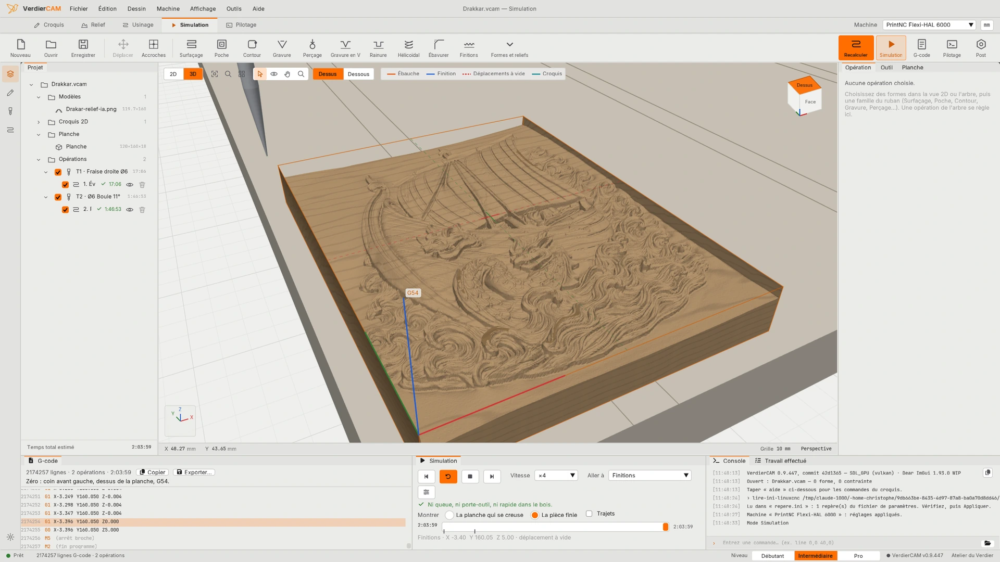
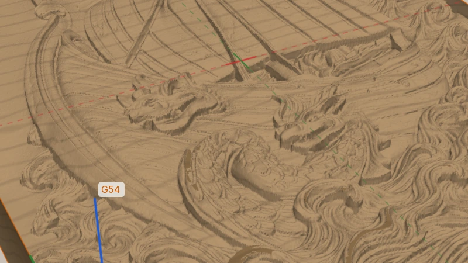
Capture réelle de la version 0.9.645
- 18familles d'opérations
- 8commandes numériques servies
- 2systèmes, Linux et Windows
- 0abonnement
- 0connexion pour travailler
Le logiciel en marche, commenté à l'atelier
Les trois niveaux, les ateliers Croquis, Relief, Usinage, Simulation et Pilotage, les menus, la bibliothèque d'outils et une fraise dessinée de bout en bout — montrés et commentés par Christophe, dans le vrai logiciel.
Lue sur YouTube, au clic seulement
Le logiciel que je n'ai pas trouvé
Quand j'ai commencé la CNC, je cherchais un logiciel sympa, facile et pas cher. Je ne l'ai pas trouvé. J'ai bidouillé entre plusieurs logiciels, plus ou moins performants : dessiner dans l'un, calculer les parcours dans l'autre, envoyer le programme avec un troisième.
Et je n'avais pas envie de mettre plusieurs centaines d'euros dans un logiciel qui ne tourne que sous Windows, alors que je travaille sous Linux.
Alors je l'ai fait. Je ne vise aucun marché : VerdierCAM, c'est l'outil que j'aurais aimé trouver en commençant. Tout dans une seule fenêtre, sous Linux comme sous Windows, à un prix qui ne fait pas hésiter.
Et depuis qu'il tourne sur le Raspberry Pi 5 de la machine, je l'utilise directement sur le lieu d'usinage, sans repasser par le bureau, qui est loin.
Christophe, Atelier du Verdier
Dessiner. Préparer. Vérifier avant de couper.
Une cote change dans le croquis : les parcours se recalculent, la simulation suit, la machine reçoit le bon programme. Sans export entre deux logiciels.
- 01
Croquis
Tracer, contraindre, coter. Importer un SVG, un DXF ou une esquisse FreeCAD.
- 02
Usinage
Choisir les formes, l'opération, la fraise. Les parcours se calculent en tâche de fond.
- 03
Simulation
Voir le bois se creuser, passe après passe, avant de lancer la machine.
- 04
Pilotage
Envoyer le programme à une machine GRBL ou grblHAL, depuis la même fenêtre.
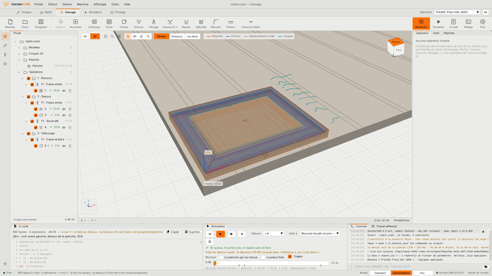
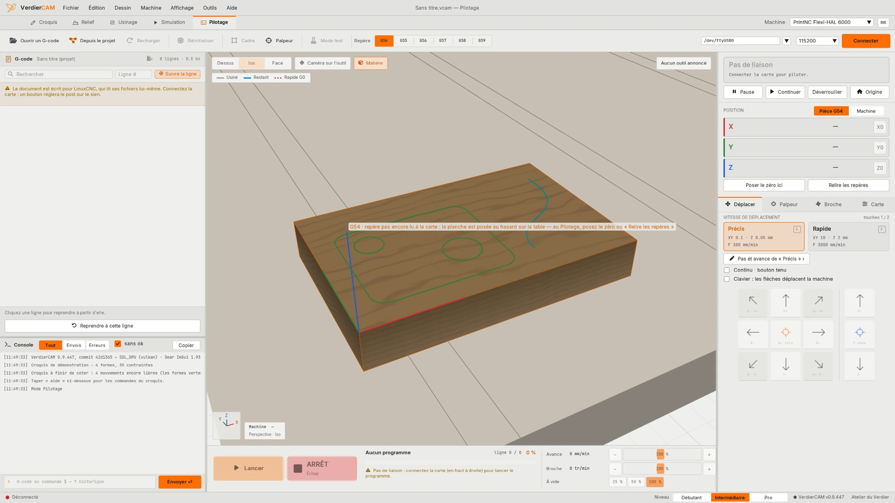
Un vrai croquis contraint, avec les gestes de FreeCAD
Les formes ne sont pas des dessins figés : ce sont des points, des traits et des arcs tenus par des contraintes. On tire un point, le solveur fait suivre le reste. On tape une cote, la pièce prend la bonne taille.
- Les raccourcis de FreeCAD : GL pour une ligne, KD pour une distance, C pour une coïncidence.
- Import SVG, DXF et FreeCAD : le dessin importé reste un croquis qui se contraint.
- Réseaux liés : une cote changée sur le premier logement change toute la série.
- Imbriquer sur la plaque : les pièces posées au plus serré, pour ne pas gâcher le panneau.
Tout le croquis
- Lignes, arcs, cercles, ellipses, oblongs, courbes de Bézier. Congés, chanfreins, décalages, symétries, ciseaux, prolonger. Annuler et refaire sur tout.
- La planche fait partie du dessin : on cote depuis un bord.
- Une expression dans tous les champs :
240/2,W/2,3in. - Texte en polices monotrait, ou dans les polices TrueType et OpenType du poste.
- Contour extérieur : le seul tour d'un dessin compliqué, en une forme fermée.
- Mettre à l'échelle pour remplir le brut, sans déformer le dessin.
- Des post-its sur la vue : vos notes et la photo de vos croquis papier.
Des variables, des boucles — et une IA peut l'écrire
Le croquis s'écrit aussi en quelques lignes, à la façon d'OpenSCAD : on change un nombre en tête du fichier, toute la pièce suit.
dents = 44; bcd = 104; c = [101, 101];
planche([202, 202, 3]);
p = pignon(c, dents); // profil de chaîne, en vrais arcs
pour (i = [0 : 3]) {
t = cercle(c + bcd/2 * [cos(90*i), sin(90*i)], 5.25);
diametre(#t, 10.5);
}- Variables, boucles, modules, mots-clés en français ; le croquis écrit sort entièrement contraint.
- Une IA l'écrit : quand une ligne ne passe pas, la console dit laquelle et pourquoi.
- Une IA aux commandes : Outils › Intelligence artificielle branche VerdierCAM sur un assistant (Claude Desktop, Claude Code ou tout client MCP) — il dessine, usine, regarde le résultat et écrit le G-code de votre machine, dans son dossier, jamais la machine.
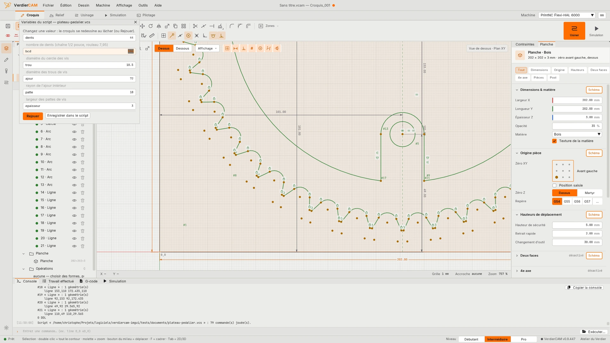
18 familles d'opérations, des réglages qui comptent
Du panneau découpé au relief, jusqu'aux pièces usinées sur les deux faces. Une opération réglée se rappelle sur la suivante.
- Cliquer les zones à vider : un clic dans une surface, puis Poche.
- Poche en zigzag, concentrique, spirale, en équerres ou adaptative.
- Gravure en V : ce qui sera creusé se voit sur le dessin avant le calcul.
- Bibliothèque de fraises et calculateur de régimes ; import des bibliothèques Fusion 360.
Tous les réglages
- Avalant ou opposition, rampe en zigzag ou en hélice.
- Les bords d'une poche posés sur le tour de la pièce s'ouvrent d'un bouton : la fraise sort dans le brut.
- Rainure en T, queue d'aronde, trou de serrure : une passe qui ferait frotter la tige est refusée.
- Fraises de forme, dessinées d'après leur profil et cotées sur leur dessin.
- Dépassement en fin de tour : la marque d'entrée s'efface.
- Surépaisseur négative pour une fraise usée ou un ajustement serré.
- En gravure 2.5D, l'ébauche s'arrête à ce que la fraise de finition pourra reprendre.
- Peau d'oignon pour les plaques minces : les pièces tiennent par un voile, sans onglets à poncer.
Les 18 familles, une par une
Découper et évider
- ContourSuivre le contour, à l'intérieur ou à l'extérieur du trait.
- PocheÉvider l'intérieur d'un contour fermé.
- SurfaçageDresser la face supérieure du brut.
- RainureAu diamètre de l'outil le long d'un trait.
- FinitionsPasse de finition à la cote : les parois (contour) ou le fond (balayage fin).
Percer et fileter
- PerçagePercer au centre d'un cercle, au diamètre de l'outil, avec débourrage.
- HélicoïdalPercer ou aléser en descente hélicoïdale.
- FiletageFileter un trou ou un tenon à la fraise à fileter, en hélice.
Graver
- GraverLe trait à faible profondeur.
- Gravure en VÀ profondeur variable selon la largeur.
- ÉbavurerChanfreiner les arêtes du dessus à la pointe V, après la découpe.
- Photo en VUne photo gravée à la pointe en V, en lignes plus profondes là où l'image est sombre.
- TextureDes coups de gouge à la boule, en rangées irrégulières : le bois travaillé à la main.
Volumes et reliefs
- Gravure 2.5DUn modèle 3D (STL, OBJ ou image) : ébauche à la fraise droite, finition à la boule en option.
- MoulureDeux formes — la première est le rail, la seconde la coupe transversale.
- RévolutionUn cercle (son centre est l'axe), puis le demi-profil, du centre vers le bord — une assiette, un bol.
Usiner les deux faces
- GoupillesDeux trous symétriques, à travers le brut et dans le martyr : retournée sur ses goupilles, la pièce retombe à sa place.
- ButéeUn logement dans le martyr, d'équerre au coin d'origine : le brut y est poussé avant chaque face.
Trois façons de travailler, les mêmes calculs
Au premier lancement, VerdierCAM demande comment on veut travailler. Seule la présentation du panneau d'usinage change : les réglages et le G-code sont les mêmes partout, et on passe de l'un à l'autre à tout moment.
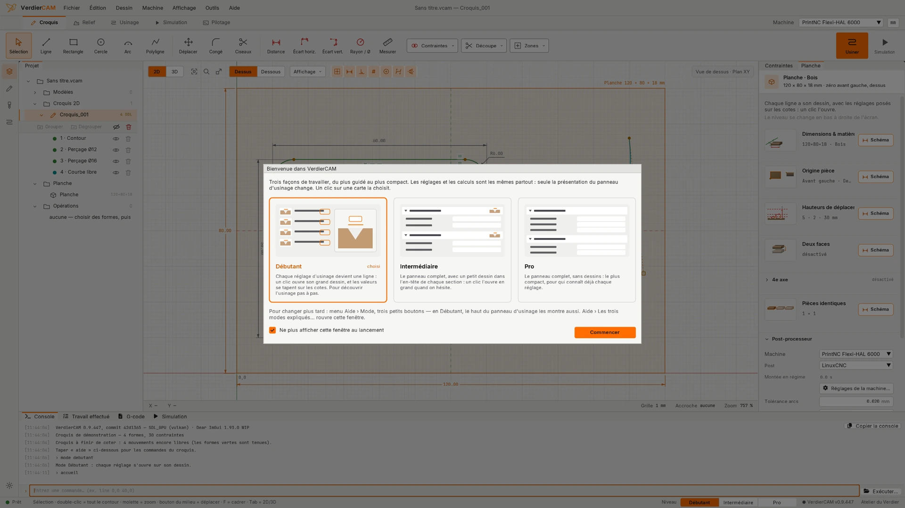
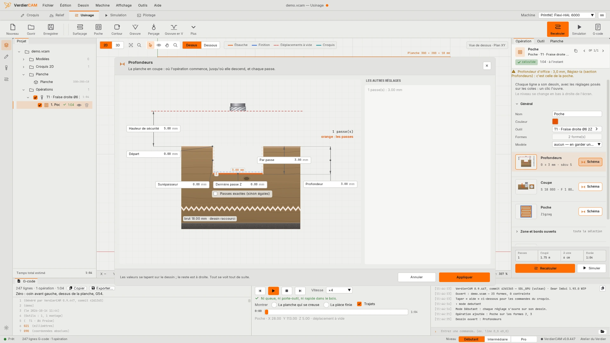
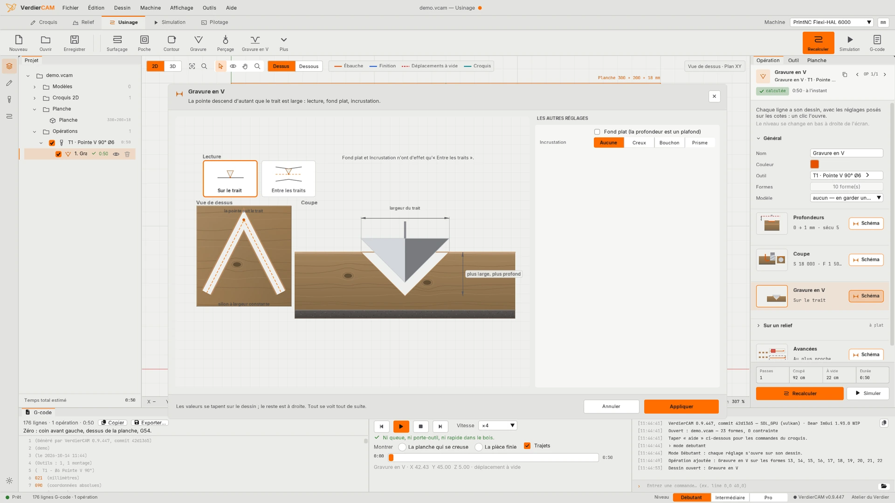
Une photo devient un bas-relief, sur votre ordinateur
La gravure 2.5D prend un modèle STL ou OBJ, ou une image en niveaux de gris jusqu'au PNG 16 bits : ébauche à la fraise droite, finition à la boule ou à la boule conique.
- Relief par IA : une photo devient une carte de hauteur, avec le modèle Depth Anything 3 réécrit en C++ — sans Python et sans connexion.
- Réglage bas-relief qui écrase les falaises et garde les détails ; calcul en tuiles pour les grandes images.
- Et aussi : Photo en V, Texture de gouge, Moulure le long d'un rail, Révolution pour une assiette ou un bol.
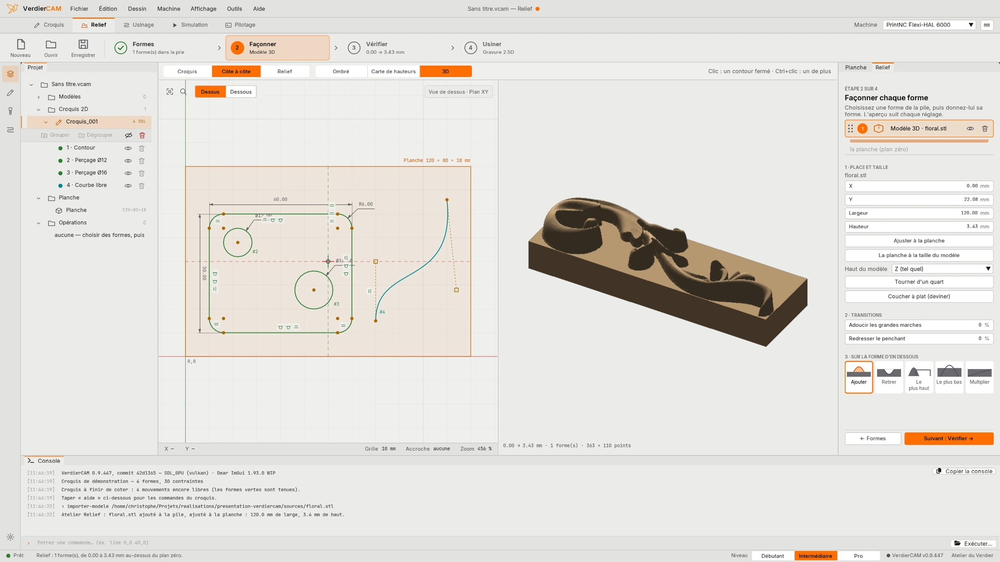
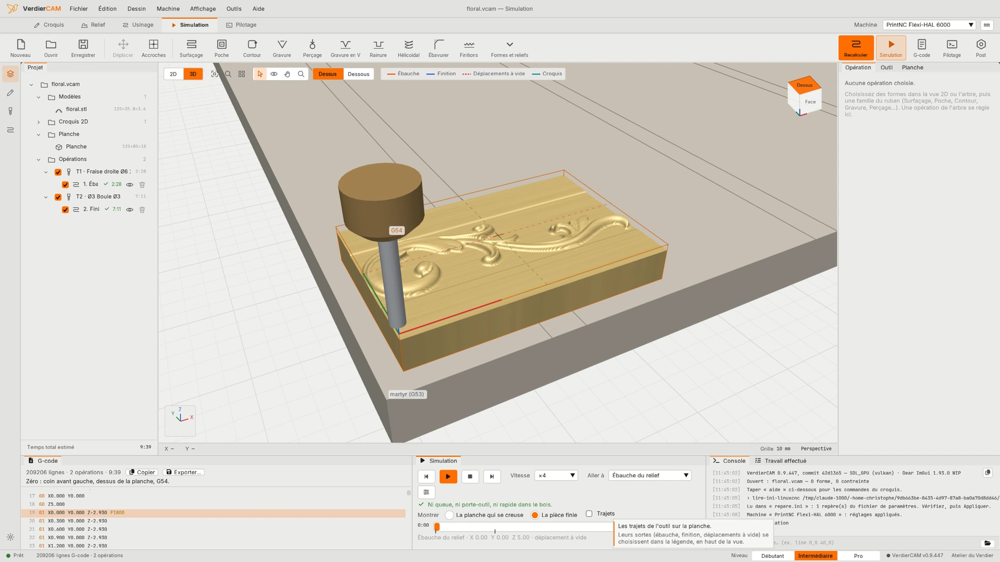
Une image en aplats, gravée ou imprimée
Fichier › Graver une image : trois écrans, des réglages qui marchent d'office.
- Chaque couleur à sa hauteur ; un clic met un morceau à part.
- À la fraise : ce qu'elle ne peut pas atteindre se voit en rouge, avant de graver.
- À l'imprimante 3D : STL, ou 3MF en couleurs lu par Bambu Studio et Orca.
- Un relief par paliers s'usine en poches à fraise droite : murs droits, fonds plats.
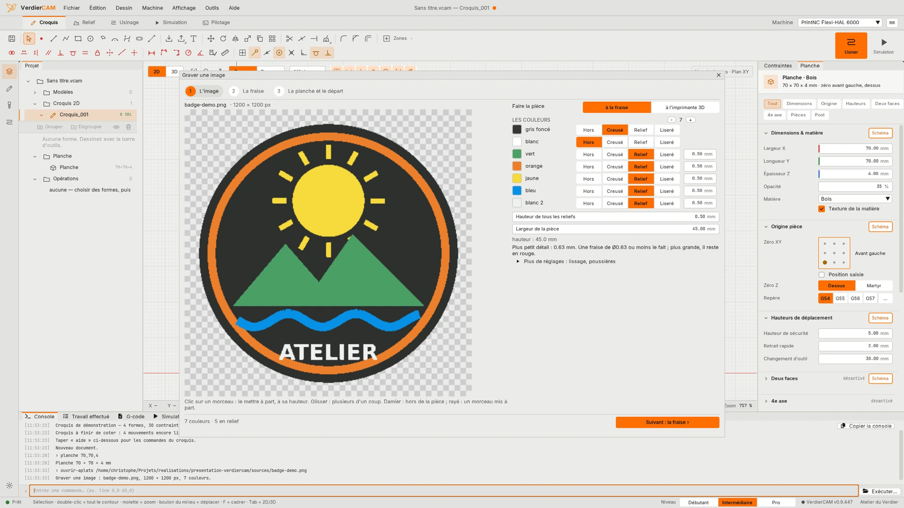
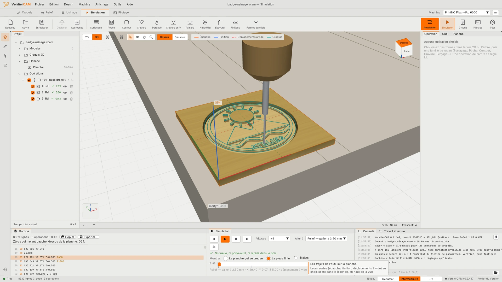
Voir le bois avant de le couper
La simulation enlève la matière comme la fraise le fera. Une erreur se voit à l'écran, pas sur la planche.
- La matière se creuse en direct, avec la veinure du bois.
- Vue en coupe : un plan qu'on fait glisser montre le profil exact.
- Lecture, pause, vitesse : on revient sur n'importe quelle passe.
- Une queue de fraise ou un porte-outil qui toucherait la pièce bloque l'export et le lancement.
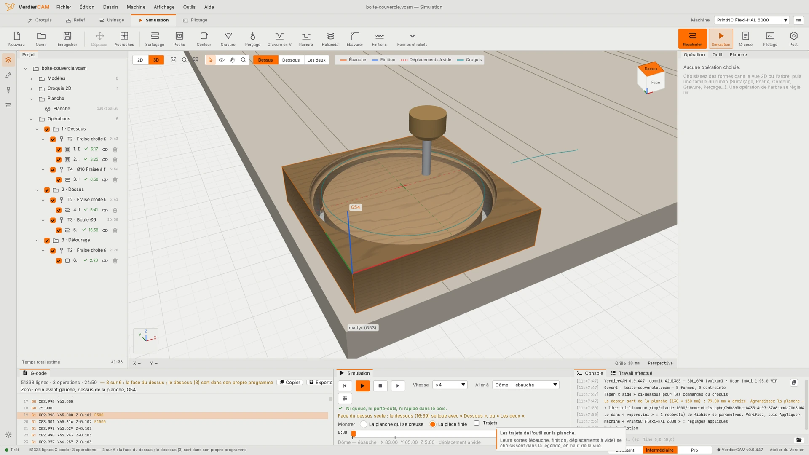
Lancer la machine depuis la même fenêtre
Le pupitre parle aux cartes GRBL et grblHAL. Pour les autres commandes numériques, VerdierCAM écrit le G-code qu'elles attendent.
- Jog au pas ou en continu, palpage, changement d'outil guidé.
- Deux faces : la pièce retournée retombe à sa place.
- Ctrl + . arrête la machine, de partout.
Tout le pupitre
- Le cadre de la pièce parcouru avant de couper.
- Grands curseurs d'avance et de broche pour corriger en cours d'usinage.
- Onduler la broche contre le broutement, sans toucher au programme.
- Changeur d'outil automatique pour les machines qui en ont un.
- Un port série refusé par Linux ? VerdierCAM dit pourquoi et l'autorise en un clic.
- LinuxCNC
- GRBL
- FluidNC
- grblHAL
- MASSO (expérimental)
- Mach3 (expérimental)
- Mach4 (expérimental)
- UCCNC (expérimental)
Le pilotage direct, depuis VerdierCAM, se fait avec GRBL et grblHAL.
MASSO, Mach3, Mach4 et UCCNC sont expérimentaux : écrits d'après leur documentation, jamais essayés sur une vraie machine. Relisez le G-code et faites un passage en l'air avant de couper.
134 pièces paramétriques à essayer, sans rien installer
VerdierCAM est livré avec un catalogue de pièces prêtes à usiner, rangées en 7 thèmes : jeux et jouets, rangement, atelier et gabarits, technique et mécanique, cuisine, décoration et cadeaux, électronique et boîtiers. Chacune est un script : ses cotes deviennent des réglages. Changez-les ici, dans votre navigateur — le prénom d'un porte-clés, les dents d'un engrenage, les mots d'une enseigne — et téléchargez le dessin en SVG ou en DXF, ou le script à rouvrir dans VerdierCAM, ses usinages compris.
- Le même calcul que le logiciel : le croquis contraint de VerdierCAM, compilé pour le navigateur.
- Rien n'est envoyé : tout se calcule sur votre ordinateur.
Les 134 pièces, thème par thème
Jeux et jouets
- Awalé
- Casse-tête à six barres
- Casse-tête des quatre pièces
- Catapulte
- Circuit à bille
- Dominos
- Échiquier en marqueterie
- Ferme la boîte
- Jeu de dames
- Jeu de go 9 × 9
- Jeu de palets (cornhole)
- Jeu du moulin
- Labyrinthe à bille
- Lancer à l'échelle
- Mini skee-ball
- Morpion et puissance 4
- Petite voiture
- Planche des nombres
- Plateau de cribbage
- Puzzle
- Quarto
- Solitaire
- Tangram
- Toupies et leur lanceur
- Tric-trac
Rangement
- Bloc à clés allen
- Boîte à cartes à jouer
- Boîte à couvercle coulissant
- Boîte à queues droites
- Caissette à compartiments
- Casier à bouteilles
- Étagère flottante
- Marchepied
- Organisateur de tiroir
- Porte-bobines de fil
- Porte-clés mural
- Porte-épices aimanté
- Porte-lunettes
- Porte-manteau
- Range-clés usb et cartes sd
- Range-forets gradué
- Range-pinceaux
- Range-télécommandes
- Râtelier à tournevis
- Serre-livres
- Support de casque audio
- Support de plantes
Atelier et gabarits
- Brides de table rainurée
- Butée de scie à onglet
- Cales de réglage en escalier
- Équerres de serrage d'angle
- Gabarit de cercle
- Gabarit de mortaise de charnière
- Gabarit de perçage « système 32 »
- Gabarit de poignées de meuble
- Gabarit de queues d'aronde
- Gabarit de tourillons
- Grille de calibrage du jeu
- Peigne à queues droites
- Peigne presseur
- Plaque de paliers de profondeur
- Porte-fraises
- Pousse-bois
- Poussoirs de scie sur table
- Queues d'aronde à plat
- Règle de traçage à crans
- Trouve-centre
Technique et mécanique
- Bielle-manivelle
- Came
- Charnière souple
- Crémaillère
- Croix de malte
- Différentiel plat
- Échappement à ancre
- Engrenage à lanterne
- Engrenage droit à développante de cercle
- Équerre à lumières
- Excentrique et sa bielle
- Flexure
- Horloge à engrenages
- Joint de oldham
- Pantographe
- Pignon de chaîne
- Poulie à joues
- Rotule à bille
- Roue à rochet et cliquet
Cuisine
- Bloc à couteaux lamellé
- Dessous de théière en spirale
- Dessous-de-plat articulé
- Égouttoir à assiettes
- Lutrin
- Planche à découper
- Planche à pain et grille à miettes
- Plateau à fromages
- Plateau de service à encoches
- Plateau tournant
- Porte-couteaux aimanté
- Porte-rouleau d'essuie-tout
- Porte-sachets de thé
- Range-épices à gradins
- Sous-verres et dessous-de-plat
- Support de livre de recettes
Décoration et cadeaux
- Boîtier de boîte à musique
- Cadre photo
- Calendrier perpétuel
- Carte en courbes de niveau
- Décorations de noël
- Enseigne
- Étoile en volume
- Horloge murale
- Lampe à lamelles
- Lampe en dentelle de bois
- Mobile
- Nichoir à mésanges
- Photophore ajouré
- Porte-clés au prénom
- Présentoir à bijoux
- Rosace ajourée
- Sapin de noël emboîté
- Silhouette de ville
Électronique et boîtiers
- Boîtier de pédale d'effet
- Boîtier électronique
- Casier à composants
- Façade de pédale d'effet
- Façade de rack 19"
- Façade oled et encodeur
- Panneau de brassage pour jacks
- Pupitre pour écran tactile 7"
- Range-câbles
- Support de bobine de filament
- Support de carte
- Support de fer à souder
- Support de raspberry pi 5
Autres
626 versions depuis le 1er octobre
Chaque correction, chaque fonction ajoutée monte le numéro d'un cran. Les derniers jours :
- 0.9.552 à 0.9.645Des variables dans le croquis, un solveur cent fois plus rapide, et 33 pièces de plus
- 0.9.464 à 0.9.551Un catalogue de 86 pièces, des parcours plus courts, et le croquis tiré d'un G-code
- 0.9.425 à 0.9.463Assemblages à dents, calques, une simulation des deux faces, VerdierCAM sur Raspberry Pi 5
Bientôt disponible
La version 0.9.645 tourne tous les jours à l'atelier. La 1.0 sortira quand elle aura été validée sur le bois — pas à une date choisie d'avance.
Un simple courriel : vous serez prévenu le jour de la sortie, au prix de lancement. Votre adresse ne sert qu'à ça.
- Prix de lancement Payé une fois, à vous pour toujours — sans abonnement. 59 € TTC puis 79 € après la période de lancement Licence perpétuelle · un an de mises à jour compris · sur 3 de vos ordinateurs · sans activation en ligne Ensuite, si vous le souhaitez : 29 € par an pour continuer à recevoir les mises à jour. Sans renouvellement, votre version continue de fonctionner. 15 jours d'essai complets : tout fonctionne, export du G-code et pilotage compris. Ensuite, le dessin et la simulation restent. TVA non applicable, art. 293 B du CGI.
- Linux Une AppImage, un seul fichier à lancer, sans installation.
- Windows 64 bits Un dossier à dézipper, sans installation non plus.
- Raspberry Pi 5 Une AppImage pour le Pi 5 en 64 bits, même sous l'image LinuxCNC : la marche à suivre.
- En français L'interface, l'aide et les Premiers pas sont écrits en français, par un artisan français.
- À votre écoute Il vous manque quelque chose ? Aide › Suggérer une idée, dans le logiciel, ou un courriel : chaque idée est lue. Un souci ? Aide › Signaler un problème prépare un fichier avec ce que vous avez fait, à joindre au courriel.
Avant de l'installer
Quel ordinateur faut-il ?
Un PC 64 bits sous Linux ou Windows, avec une carte graphique compatible Vulkan, comme le sont les cartes AMD, NVIDIA et Intel de ces dernières années. Ou un Raspberry Pi 5 sous un système 64 bits, à côté de la machine. L'interface s'agrandit de 80 à 150 % pour les écrans à haute densité. Installer, pas à pas.
Faut-il une connexion internet ?
Non. Tout se calcule sur le poste, relief par IA compris. La connexion ne sert qu'à télécharger le modèle du relief par IA (1,3 Go), si on le veut — une fois — et à dire, au lancement, si une version plus récente est publiée : le numéro de version passe au rouge en bas de la fenêtre, et un clic propose de la télécharger. Un assistant d'IA branché (facultatif) passe, lui, par sa propre connexion.
Ma machine est-elle prise en charge ?
Le G-code s'écrit pour LinuxCNC, GRBL, FluidNC, grblHAL, et, à titre expérimental — écrits d'après leur documentation, jamais essayés sur une vraie machine —, MASSO, Mach3, Mach4 et UCCNC. Le pilotage direct, depuis VerdierCAM, se fait avec GRBL et grblHAL.
Je dessine dans FreeCAD, Inkscape ou un logiciel de DAO.
Les esquisses FreeCAD (.FCStd), les SVG et les DXF s'importent
directement, et le dessin importé reste un croquis : il se contraint et se retouche.
Le dessin s'exporte aussi en SVG et DXF.
Est-ce seulement pour le bois ?
Le bois d'abord : c'est ce que l'atelier usine, et ce que la simulation montre avec sa veinure. Le calculateur de régimes connaît aussi le MDF, le contreplaqué, le plexi, le POM, l'aluminium, le laiton et l'acier doux.
Peut-on l'essayer avant de l'acheter ?
Oui : 15 jours d'essai complets dès le premier lancement, sans carte bancaire et sans inscription : à la sortie, on télécharge, on lance, c'est tout. Tout fonctionne, export du G-code et pilotage de la machine compris — de quoi vérifier que votre carte GRBL ou grblHAL suit le pilotage, ou que votre LinuxCNC lit bien le G-code. Ensuite, le dessin et la simulation restent ; seuls l'export et l'envoi à la machine demandent une licence.
Comment s'active la licence ?
Elle arrive par courriel : un petit fichier à votre nom. Dans VerdierCAM, Aide › Licence…, puis « Choisir le fichier de licence… » : elle s'active aussitôt, sans connexion, et vaut sur toutes vos machines.
Comment passer à une nouvelle version ?
Quand une version sort, le numéro en bas de la fenêtre passe au rouge. Un clic : ce qui change, et « Télécharger ». Décompressez, lancez — vos réglages, vos outils et votre licence sont gardés. Pendant vos mises à jour comprises, chaque nouvelle version est à vous.
Il manque une chose dont j'ai besoin.
Dites-le : dans le logiciel, Aide › Suggérer une idée écrit le courrier pour vous ; ou écrivez à contact@verdiercam.fr. Chaque idée est lue par celui qui écrit VerdierCAM. Le logiciel est né dans un atelier ; il grandit avec ceux qui s'en servent — une fonction, un réglage, une machine, un mot mal choisi : tout compte.
Et le prix ?
Payé une fois, à vous pour toujours : une licence perpétuelle, la version achetée fonctionne pour toujours, sans activation en ligne et sur toutes vos machines. Un an de mises à jour est compris ; ensuite, les recevoir encore se renouvelle si on le souhaite, sans obligation, pour 29 € par an. 59 € TTC au lancement, puis 79 € (TVA non applicable, art. 293 B du CGI).